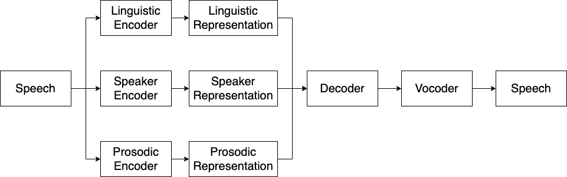

Mingjie Chen, Thomas Hain
Department of Computer Science, University of Sheffield
Abstract. Current state-of-the-art voice conversion (VC) systems typically are developed based on an encoder-decoder framework. In this framework, encoders are used to extract linguistic, speaker or prosodic features from speech, then a decoder is to generate speech from speech features. Recently, there have been more and more advance models deployed as encoders or decoders for VC. Although obtaining good performance, the effects of these encoders and decoders have not been fully studied. On the other hand, VC technologies have been applied in different scenarios, which brings a lot of challenges for VC techiques. Hence, studies and understandings of encoders and decoders are becoming necessary and important. However, due to the complexity of VC systems, it is not always easy to compare and analyse these encoders and decoders. This paper introduces a toolkit, EasyVC, which is built upon the encoder-decoder framework. EasyVC supports a number of encoders and decoders within a unified framework, which makes it easy and convenient for VC training, inference, evaluation and deployment. EasyVC provides step-wise recipes covering from dataset downloading to objective evaluations and online demo presentation. Furthermore, EasyVC focuses on challenging VC scenarios such as one-shot, emotional, singing and real-time, which have not bee fully studied at the moment. EasyVC could help researchers and developers to investigate modules of VC systems and also promote the development of VC techniques.

Here we introduces the encoder-decoder framework for VC systems. As show in the figure, this framework typically is composed of three encoders, a decoder and a vocoder. More specifically, three encoders are used to extract representations from speech, including a linguistic encoder, a prosodic encoder and a speaker encoder. Then a decoder is used to reconstruct speech mel-spectrograms. Finally, a vocoder converts mel-spectrograms to waveforms. Note that this repo also supports decoders that directly reconstruct waveforms (e.g. VITS), in these case, vocoders are not needed.
In this section, we provide the objective results and audio demos of a simple comparison one-shot VC experiment. We chosed VQ-Wav2vec and ConformerPPG as linguistic encoders, in the meantime, we chosed FastSpeech2, TacoAR and TacoMOL as decoders. Traing dataset is LibriTTS-460-clean, testing dataset is VCTK. We use d-vector as speaker encoder, ppgvc_f0 as prosodic encoder, ppgvc_hifigan as vocoder.
List VC Systems:
| Source Audio | Target Audio | System 0 | System 1 | System 2 | System 3 | System 4 | System 5 |
|---|---|---|---|---|---|---|---|